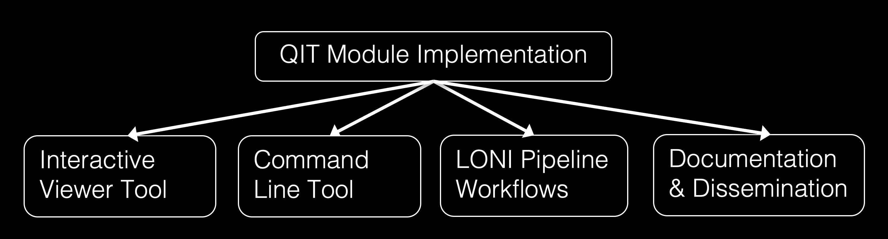
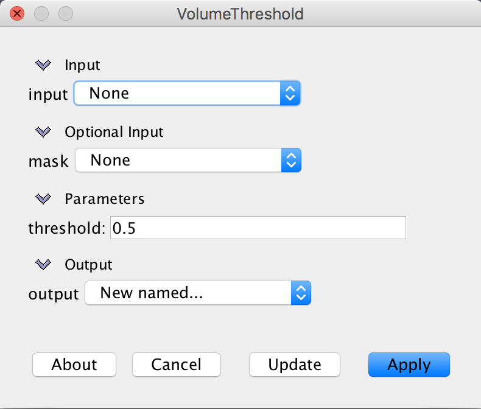

What are QIT modules?
QIT includes a module framework for making making it easy to analyze data. This page describes how modules are used, outlines the basic components of the module framework, and provides an example of a module. If you’re not interested in the software development aspects, you can probably just read the first section.
Why use a Module?
The QIT module system is meant to make it easier to use the many useful data processing algorithms that are out there. Many researchers develop sophisticated new methods, but unfortunately, they often end up as prototypes that aren’t more widely used. The module framework is an attempt to bridge the gap between these methods and people who can use them in their research. The basic idea is to provide a simple interface for implementing an algorithm that doesn’t require the developer to worry about file formats, user interfaces, etc.

All of these things are automatically handled by QIT once a Module
has been implemented, making it easy to share a new tool with a wider audience.
Any QIT Module can be run on the command line, applied to data
interactively in qitview, or run on the
[http://pipeline.loni.usc.edu LONI Pipeline]. In addition, documentation can
be made from a Module and a preferred set of parameter settings
can be saved for later use or archival purposes.
What is a Module?
A Module is an object that processes data in some way. That may
sound too general to be useful, but there are a number of elements common to
each Module that make life easier for both software developers and
users. From the perspective of a developer, a Module makes life
easier by providing a framework for implementing both simple and complex
algorithms that use any of the available Datasets. This framework isn’t
specific to any file format, so any new Module automatically
supports the file formats listed in for each of the Datasets. It also
provides automatically generated command line and graphical user interfaces for
using the Module. For command line applications, each
Module will have an automatically generated usage page and option
parsing available. For graphical applications, each Module will
be listed in 3d data viewer qitview, along with a dialog for
controlling how the it operates on data loaded in the viewer. For the user,
this framework also simplifies the analysis of data by providing a consistent
interface across algorithms, reducing the need to learn how to use each tool as
it comes along. It also means that an algorithm is more widely available than
if it was developed as an independent program or as a MATLAB
script, which are not typically integrated into data viewers or support many
file formats. Finally, each Module also supports meta-data that
includes the author, associated publications, and plain english descriptions.
What makes up a Module?
Each Module has some number of fields with annotations to indicate
how they should be treated. There are three main types:
@ModuleInput: a Datasets object that will be processed, which is provided by the user when they run the module@ModuleParameter: a numerical, string, or boolean parameter, which is provided by the user@ModuleOutput: a Datasets object that will be the result, which will be received by the user
There can be multiple @ModuleInput and @ModuleOutput fields, each of which belongs to one of the types listed in Datatypes. There can be any number of @ModuleParameter components, but they must also be primitive types, such Integer, Double, String, or Boolean. @ModuleParameter field can also have default values. There are also modifiers on fields, including:
@ModuleOptional: a component is not required for theModuleto run@ModuleAdvanced: a component is not typically modified (only used when making documentation)
There can also be annotations for provenance, for example:
@ModuleDescription: a plain english description of a module or field@ModuleAuthor: the person implementing theModule(not necessarily the author of the underlying algorithm or paper)@ModuleCitation: a reference that should be cited when using this module in analysis for academic publication
Beyond this, each Module also contains the procedures for data processing, which is why you would use the Module in the first place!
What is an example of a Module?
Below, we provide an example Module named VolumeThreshold that thresholds a Volume to produce a binary Mask. While there are many more complex examples, this demonstrates the basic features of a Module.
The code for the module looks like this:
@ModuleDescription("Threshold a volume to make a mask")
@ModuleAuthor("Ryan Cabeen")
public class VolumeThreshold implements Module
{
@ModuleInput
@ModuleDescription("input volume")
public Volume input;
@ModuleInput
@ModuleDescription("a mask restricting which voxels are processed")
public Mask mask;
@ModuleParameter
@ModuleDescription("threshold value")
public double threshold = 0.5;
@ModuleOutput
@ModuleDescription("output mask")
public Mask output;
public VolumeThreshold run()
{
Mask out = new Mask(this.input.getSampling());
for (Sample sample : this.input.getSampling())
{
if (this.input.valid(sample, this.mask))
{
double value = this.input.get(sample, 0);
if (value >= this.threshold)
{
out.set(sample, 1);
}
}
}
this.output = out;
return this;
}
}
The command line interface for this module looks like this:
$ qit VolumeThreshold --help
Name:
VolumeThreshold
Description:
threshold a volume to make a mask
Required Arguments:
--input <Volume>
input volume
--output <Mask>
output mask
Optional Arguments:
--mask <Mask>
a mask restricting which voxels are processed
--threshold <double>
threshold value (Default: 0.5)
Author:
Ryan Cabeen
The graphical user interface looks like this:

Note: the module dialog supports tooltips, which means if you hover the mouse over a @Parameter it will pop up a box showing more information.